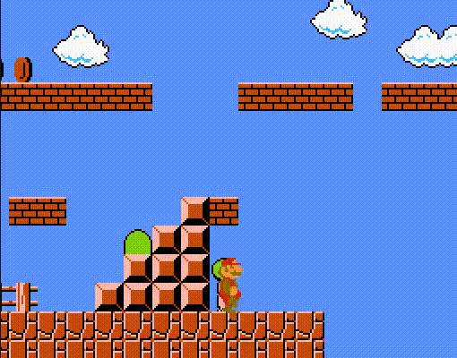

Monkey Do, Monkey See
Please note this page is under construction
Capcom's Seth Killian claims the following:
"I can learn more about someone from watching 10 seconds of them playing Street Fighter than 10 hours of them watching an RPG."
Despite certain games having the potential for a form of unique player expression, it has been mostly unused when it comes to designing games. Until now.
Part 1: Identifying player expression
At first, this sounds like something that would be impossible. However, consider physical games such as poker that rely on players effectively determining whether or not their opponents are bluffing. To see a simple example in video games, look at the following example from Super Mario Brothers:
Here the player decides mid-air to turn around, rather than risk falling into the pit. It's easy to conclude that at this moment the player is not confident. Of course, the key to reaching this conclusion is that the mid-air control in Super Mario Brothers is well designed enough to allow for the player to control their jump arc mid-air in the first place.
Part 2: The test.
While it can be easy for humans to see, is it so easy, a computer could do it?
While fighting games were the original spark behind this idea, if I wanted to build a game around exploring this idea of unique player expression to its fullest potential,
then the experience I want to craft would be too limiting as a fighting game. I felt this way because only at most 1 character would be reacting to the player's actions.
I ultimately decided to make my prototype a 3D-platformer since it is both a genre I am more experienced in
and I noticed that it is a genre that relies on a large moveset and movement, similar to how fighting games rely on moveset and spacing.
To see whether or not this would work, I used a machine learning algorithm known as classification to try and categorize various player actions into emotional states.